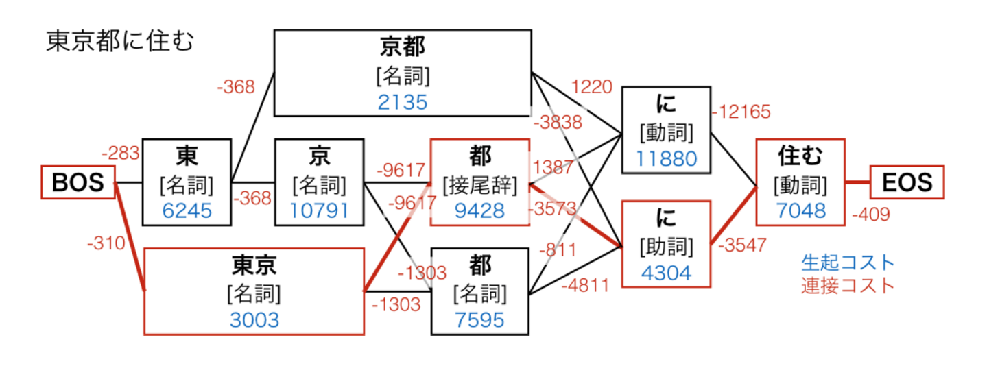
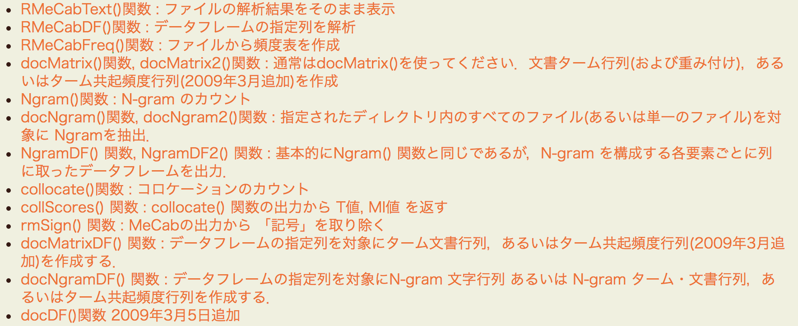

R による日本語テキスト前処理
(形態素解析を中心に)
@y__mattu
Tokyo.R #64 応用セッション
はじめに
誰？
- 松村優哉
- Twitter: y__mattu
- GitHub: ymattu
- M1
- 計量経済学、ベイズ統計、因果推論、マーケティング
- 言語: R, SAS, Python
- https://ymattu.github.io/
- http://y-mattu.hatenablog.com/
- Tokyo.R 運営チーム

著書(共著)
今日の話
- テキストマイニングの全体像
- テキストデータ特有の前処理
- 僕らがまず目指すべきところ
- 形態素解析について
- R で形態素解析
- まとめ
パッケージ名だけでも覚えて
帰ってくださいね
テキストマイニングの全体像
テキストデータの解析(引用)
テキストデータ特有の処理
- 本文抽出(Web データ、非構造化データ)
- 形態素解析、統語解析、意味解析
→文書の特徴を抽出 - 数値表現化(Bag of Words, N-gram, TF-IDF など))
パッケージ的には？
- stringr(文字列処理の決定版)
- tidytext(言語処理関連いろいろ)
テキストデータのモデリング
R パッケージ的には？
- ネガポジ判定(単語極性辞書との照合)
- 各種分類手法
- SVM(e1071)
- Random Forest(RandomForest, ranger)
- XGboost(xgboost)
- トピックモデル(LDA, topicmodels, LDAvis)
- word2vec(GloVe)(text2vec)
僕らがまず目指すところ
単語がスペースで区切られてる状態(分かち書き)
| id | text |
|---|---|
| 1 | 私 は 新しい スマートフォン を 買っ た |
| 2 | 今夜 は ミルクティ を 飲む |
| 3 | 私 に は 外国人参政権 が ある |
| 4 | 今夜 は クライアント 対応 で 眠れ ない だろ う |
分かち書きされていれば、
たいていのことはできてしまいます。
(ただし日本語は注意が必要)
例: Bag of Words
bow <- txt %>%
tidytext::unnest_tokens(output = "word", input = "text",
token = stringr::str_split, pattern = " ")
bow# A tibble: 27 x 2
id word
<int> <chr>
1 1 私
2 1 は
3 1 新しい
4 1 スマートフォン
5 1 を
6 1 買っ
7 1 た
8 2 今夜
9 2 は
10 2 ミルクティ
11 2 を
12 2 飲む
13 3 私
14 3 に
15 3 は
16 3 外国人参政権
17 3 が
18 3 ある
19 4 今夜
20 4 は
21 4 クライアント
22 4 対応
23 4 で
24 4 眠れ
25 4 ない
26 4 だろ
27 4 う例: Bag of Words
library(magrittr)
bow %<>%
group_by(id, word) %>%
summarise(freq = n())
bow# A tibble: 27 x 3
# Groups: id [?]
id word freq
<int> <chr> <int>
1 1 スマートフォン 1
2 1 た 1
3 1 は 1
4 1 を 1
5 1 私 1
6 1 新しい 1
7 1 買っ 1
8 2 は 1
9 2 ミルクティ 1
10 2 を 1
11 2 飲む 1
12 2 今夜 1
13 3 ある 1
14 3 が 1
15 3 に 1
16 3 は 1
17 3 外国人参政権 1
18 3 私 1
19 4 う 1
20 4 クライアント 1
21 4 だろ 1
22 4 で 1
23 4 ない 1
24 4 は 1
25 4 今夜 1
26 4 対応 1
27 4 眠れ 1例: ストップワードの除去
stopword <- c("私", "こと")
bow %>%
dplyr::anti_join(dplyr::data_frame(word = stopword), by = "word")# A tibble: 25 x 3
# Groups: id [?]
id word freq
<int> <chr> <int>
1 4 眠れ 1
2 4 対応 1
3 4 ない 1
4 4 で 1
5 4 だろ 1
6 4 クライアント 1
7 4 う 1
8 3 外国人参政権 1
9 3 に 1
10 3 が 1
11 3 ある 1
12 2 今夜 1
13 4 今夜 1
14 2 飲む 1
15 2 ミルクティ 1
16 1 買っ 1
17 1 新しい 1
18 1 を 1
19 2 を 1
20 1 は 1
21 2 は 1
22 3 は 1
23 4 は 1
24 1 た 1
25 1 スマートフォン 1例: TF-IDF
bow %>%
tidytext::bind_tf_idf(term_col = "word", document_col = "id", n_col = "freq")# A tibble: 27 x 6
# Groups: id [?]
id word freq tf idf tf_idf
<int> <chr> <int> <dbl> <dbl> <dbl>
1 1 スマートフォン 1 0.1428571 1.3862944 0.19804205
2 1 た 1 0.1428571 1.3862944 0.19804205
3 1 は 1 0.1428571 0.0000000 0.00000000
4 1 を 1 0.1428571 0.6931472 0.09902103
5 1 私 1 0.1428571 0.6931472 0.09902103
6 1 新しい 1 0.1428571 1.3862944 0.19804205
7 1 買っ 1 0.1428571 1.3862944 0.19804205
8 2 は 1 0.2000000 0.0000000 0.00000000
9 2 ミルクティ 1 0.2000000 1.3862944 0.27725887
10 2 を 1 0.2000000 0.6931472 0.13862944
11 2 飲む 1 0.2000000 1.3862944 0.27725887
12 2 今夜 1 0.2000000 0.6931472 0.13862944
13 3 ある 1 0.1666667 1.3862944 0.23104906
14 3 が 1 0.1666667 1.3862944 0.23104906
15 3 に 1 0.1666667 1.3862944 0.23104906
16 3 は 1 0.1666667 0.0000000 0.00000000
17 3 外国人参政権 1 0.1666667 1.3862944 0.23104906
18 3 私 1 0.1666667 0.6931472 0.11552453
19 4 う 1 0.1111111 1.3862944 0.15403271
20 4 クライアント 1 0.1111111 1.3862944 0.15403271
21 4 だろ 1 0.1111111 1.3862944 0.15403271
22 4 で 1 0.1111111 1.3862944 0.15403271
23 4 ない 1 0.1111111 1.3862944 0.15403271
24 4 は 1 0.1111111 0.0000000 0.00000000
25 4 今夜 1 0.1111111 0.6931472 0.07701635
26 4 対応 1 0.1111111 1.3862944 0.15403271
27 4 眠れ 1 0.1111111 1.3862944 0.15403271例: 機械学習モデル
text2vec→ txt の状態で入れられる LDA→ bow を tidytext::cast_dtm() 関数で変換 その他→ tidyverse とかで頑張る(案件依存なので省略)
形態素解析について
(日本語の)形態素解析の要素
- 分かち書き
- 品詞の付与
- 活用語の処理(原形に戻す、表記ゆれの吸収)
形態素解析の仕組み(ざっくり)
- 辞書と照合して候補を列挙
- 候補からコストに基づき正しいのを選ぶ
形態素解析の仕組み(図解)

コストの求め方と辞書の性能で形態素解析の精度が決まる
このへんをいい感じにやってくれるのが形態素解析器
形態素解析器(有名なもの)
MeCab
- 条件付き確率場(CRF)に基づく系列ラベリング
- コーパスベースでコストを推定
- 辞書への単語追加が容易
- 詳しくは
JUMAN++
- JUMAN というのがもともとあった
- 2016.9 に JUMAN++登場
- 人手による連接ルール
- RNN を使用→単語の並びの意味的自然さを考慮可能
- 基本語彙のみ人手で整備、あとは Wikipedia や Web テキストから取得
- 表記ゆれやくだけた表現をある程度吸収
- Mac か Linux でしか使えない
- 詳しくは
Kytea
- SVM やロジスティック回帰で単語境界を推定
- 文脈でよみがなを変更
形態素解析 (R 編)
使える形態素解析器
- MeCab → RMeCab
- JUMAN++ → rjumanpp
RMeCab パッケージ
使ってみる
MeCab 本体のイントールは省略 インストール
install.packages("RMeCab", repos = "http://rmecab.jp/R")ロード
library(RMeCab)単純な形態素解析
library(RMeCab)
rmc <- RMeCabC("私は新しいスマートフォンを買った")
rmc[[1]]
名詞
"私"
[[2]]
助詞
"は"
[[3]]
形容詞
"新しい"
[[4]]
名詞
"スマートフォン"
[[5]]
助詞
"を"
[[6]]
動詞
"買っ"
[[7]]
助動詞
"た" 余談
RMeCabC()の出力は、
「名前のついたリスト」
ではなく
「名前付きベクトルのリスト」
どういうことか
名前のついたリストはこんなやつ
( x <- split(1:10, rep(c("odd", "even"), 5)) )$even
[1] 2 4 6 8 10
$odd
[1] 1 3 5 7 9リストの状態ではアクセス方法が違う
x$even[1] 2 4 6 8 10rmc[[1]]名詞
"私" rmc[[1]][[1]][1] "私"unlist()しちゃえば同じ
名前付きベクトルになる
unlist(x)even1 even2 even3 even4 even5 odd1 odd2 odd3 odd4 odd5
2 4 6 8 10 1 3 5 7 9 unlist()しちゃえば同じ
名前付きベクトルになる
unlist(rmc) 名詞 助詞 形容詞 名詞
"私" "は" "新しい" "スマートフォン"
助詞 動詞 助動詞
"を" "買っ" "た" 話を戻して
- これを分かち書きしたい
- しかし RMeCab には分かち書きのための関数がない
- こんな感じ？
mecab_wakati <- function(..., pos = "") {
res <- RMeCabC(...) %>%
unlist() %>%
.[stringr::str_detect(names(.), pos) == TRUE] %>%
stringr::str_c(collapse = " ")
if(length(res) == 0) {
res <- ""
}
return(res)
}できた!!
mecab_wakati("私は新しいスマートフォンを買った")[1] "私 は 新しい スマートフォン を 買っ た"mecab_wakati("私は新しいスマートフォンを買った", pos = "名詞")[1] "私 スマートフォン"データフレームに適用したい
txt2 <- dplyr::data_frame(id = c(1:4),
text = c("私は新しいスマートフォンを買った",
"今夜はミルクティを飲む",
"私には外国人参政権がある",
"今夜はクライアント対応で眠れないだろう"))
knitr::kable(txt2)| id | text |
|---|---|
| 1 | 私は新しいスマートフォンを買った |
| 2 | 今夜はミルクティを飲む |
| 3 | 私には外国人参政権がある |
| 4 | 今夜はクライアント対応で眠れないだろう |
rowwise()をかませます
txt2 %>%
rowwise() %>%
mutate(wakati = mecab_wakati(text)) %>%
select(-text) %>%
knitr::kable()| id | wakati |
|---|---|
| 1 | 私 は 新しい スマートフォン を 買っ た |
| 2 | 今夜 は ミルクティ を 飲む |
| 3 | 私 に は 外国 人参 政権 が ある |
| 4 | 今夜 は クライアント 対応 で 眠れ ない だろ う |
RMeCab は他にもいろいろできる

rjumanpp パッケージ
作者は私です
- まだ分かち書きの関数しかありません
- 頑張ります
- 特徴
- tidyverse群を使ったイマドキで見通しのいいコード
- 関数には共通のプレフィックス(
jum_***) - pkgdown を使った見やすいドキュメント
- 詳しくはvignette
使ってみる
インストール
# 方法 1
githubinstall::githubinstall("rjumanpp")
# 方法 2
devtools::install_github("ymattu/rjumanpp")ロード
library(rjumanpp)分かち書きの関数、あります
jum_wakati("私は新しいスマートフォンを買った")[1] "私 は 新しい スマートフォン を 買った"jum_wakati("私は新しいスマートフォンを買った", pos = "名詞")[1] "私 スマートフォン"mecab_wakatiと比較
jum_wakati("私は新しいスマートフォンを買った")[1] "私 は 新しい スマートフォン を 買った"mecab_wakati("私は新しいスマートフォンを買った")[1] "私 は 新しい スマートフォン を 買っ た"JUMAN++独自の機能
表記ゆれの置き換え(JUMAN++が拾えてたら)
jum_wakati("私はけんさくえんじんぐーぐるを使う")[1] "私 は けんさく えんじん ぐーぐる を 使う"jum_wakati("私はけんさくえんじんぐーぐるを使う", redirect = TRUE)[1] "私 は けんさく えんじん Ｇｏｏｇｌｅ を 使う"データフレーム
txt2 %>%
rowwise() %>%
mutate(wakati = jum_wakati(text)) %>%
select(-text) %>%
knitr::kable()| id | wakati |
|---|---|
| 1 | 私 は 新しい スマートフォン を 買った |
| 2 | 今夜 は ミルクティ を 飲む |
| 3 | 私 に は 外国 人 参政 権 が ある |
| 4 | 今夜 は クライアント 対応 で 眠れ ない だろう |
欠点
遅いです。
system.time(jum_wakati("新しいスマートフォンを買った")) user system elapsed
0.127 0.240 0.389 これは JUMAN++が遅いため(RNN の影響)
サーバーモード
- JUMAN++ を常に起動
→オーバーヘッドを回避
→ちょっと速くなる
ターミナルで
ruby script/server.rb --cmd "jumanpp --force-single-path"解析もターミナルで
echo "ケーキを食べる" | ruby script/client.rbってやるのは面倒くさいですよね？
関数を用意しました
サーバーを起動(ローカルホスト, 12000 ポート)
jum_start_server()ポートとかホスト名を指定したいときは
jum_start_server(host.name = "hoge", port = 1234)ちょっと速くなる
# 関数内で server=TRUE を指定
jum_wakati("新しいスマートフォンを買った", server = TRUE)[1] "新しい スマートフォン を 買った"時間を比較
# サーバーを利用しない
system.time(jum_wakati("新しいスマートフォンを買った", server = FALSE)) user system elapsed
0.123 0.249 0.384 # サーバーを利用する
system.time(jum_wakati("新しいスマートフォンを買った", server = TRUE)) user system elapsed
0.086 0.078 0.208 サーバーは解析が終わったら閉じる
jum_close_server()まとめ
パッケージの使い分け
- スピード重視ならRMeCab
- 正確さ重視ならrjumanpp
- どっちがいいとかはない
- 形態素解析以前の前処理もしっかりと!
このスライドについて
revealjs パッケージで作成 - 以下の GitHub でソースコードを公開
https://github.com/ymattu/TokyoR64